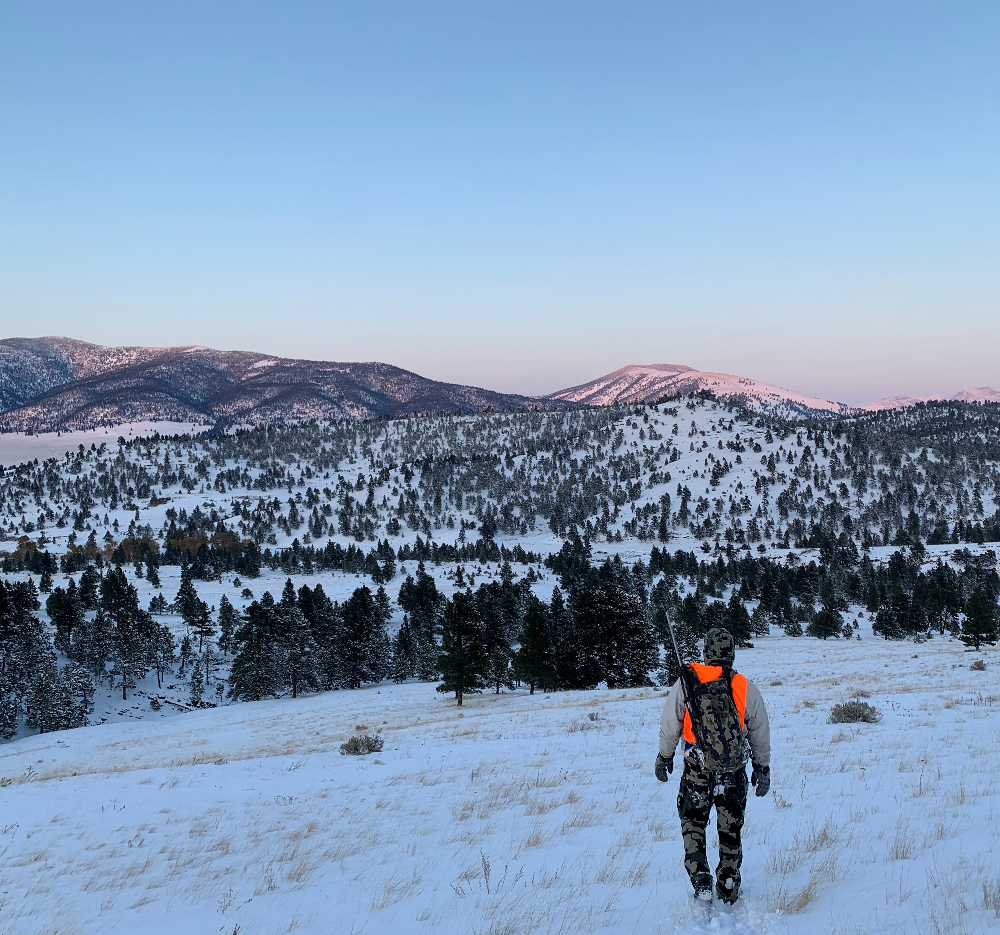

Autumn in Montana
Autumn in Montana brings early snowfalls, but the occasional beautiful days as well. The mornings are usually brisk, while the afternoons are the perfect temperature outside. Montana is known for it's hunting in the autumn. People from all around the country come to Montana in hopes to find big game. While hunting is a popular autumn activity, there are other activities that Montanans do in the Fall. A few examples are:
- Hiking
- Enjoying (and raking) the beautiful fall leaves
- Biking
- Having a bonfire
- Picking apples
Most of all, enjoy the beautiful colors and fresh air Montana has to offer in early Autumn before the snow comes.